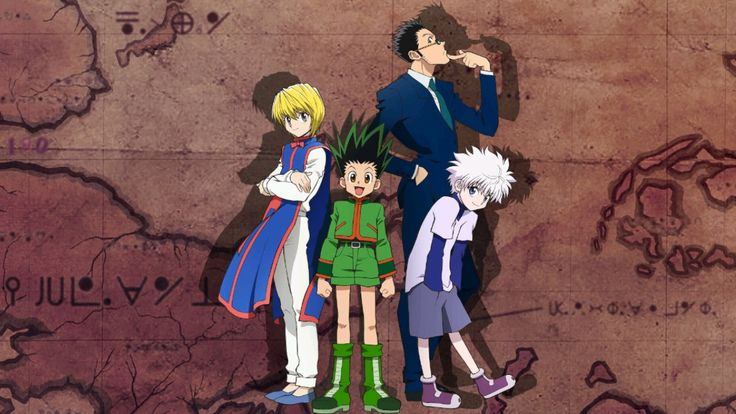

Trailer :
Genres :
- Action et Aventure
- Drame
- Fantasy
- Shōnen
- Nekketsu
- Comédie
Synopsis :
À 12 ans, Gon Freecss découvre que son père, qu'il croyait mort, est en réalité un « Hunter » légendaire, membre d'une élite d'aventuriers aux multiples facettes.
Déterminé à retrouver sa trace, il quitte son île natale pour affronter l'examen de Hunter, une série d'épreuves mortelles où il se lie d'amitié avec Kurapika, Leorio et Killua.
Ensemble, ils surmontent des dangers inouïs, des monstres aux criminels, tout en développant leurs capacités uniques grâce au « Nen ». Au-delà de sa quête paternelle, Gon s'engage dans des aventures toujours plus périlleuses qui testeront son humanité et sa force.
Personnages :
Gon Freecs
Gon Freecss est un jeune garçon optimiste et talentueux qui quitte son île natale pour devenir Chasseur et retrouver son père légendaire. Il possède un sens aigu de la justice et une force physique naturelle impressionnante pour son âge. Sa quête l'amène à se lier d'amitié avec d'autres candidats lors d'un examen périlleux.
Killua Zoldyck
Killua Zoldyck est un enfant issu d'une célèbre famille d'assassins, cherchant à s'émanciper de son éducation brutale pour vivre librement. Bien que très puissant et habitué au meurtre, il développe une loyauté indéfectible envers ses nouveaux amis. Son agilité et son intelligence tactique en font un combattant redoutable mais complexe.
Kurapika
Kurapika est le dernier survivant du clan Kurta, animé par une froide détermination à venger son peuple massacré par des voleurs. Il est intelligent, calme et méthodique, cachant une rage profonde derrière une apparence sereine. Son objectif principal est de récupérer les yeux de son clan, devenus des trésors convoités.
Leorio Paradinight
Leorio Paradinight est un étudiant en médecine plus âgé que la moyenne, qui souhaite devenir Chasseur pour financer ses études et soigner les pauvres. D'apparence impulsif et intéressé par l'argent, il cache un cœur généreux et un fort sens de la morale. Il compense son manque d'expérience au combat par sa force brute et sa détermination.
Hisoka Morow
Hisoka Morow est un magicien sadique et imprévisible qui ne s'intéresse qu'aux combattants puissants capables de lui offrir un bon duel. Il manipule souvent les événements et les gens dans l'ombre pour pousser ses proies favorites à se renforcer. Son humour macabre et sa force terrifiante en font un allié dangereux et un ennemi mortel.
Anime :
Saison 1 : 148 épisodes
Film 1 : Phantom Rouge
Film 2 : The Last Mission
Manga :
Nombre total de tomes : 38 (France), 39 (Au japon)
Statut : en cours de publication
Auteur :
Yoshihiro Togashi
Note :
oo/10
Commentaire :
Mon anime de coeur.
l